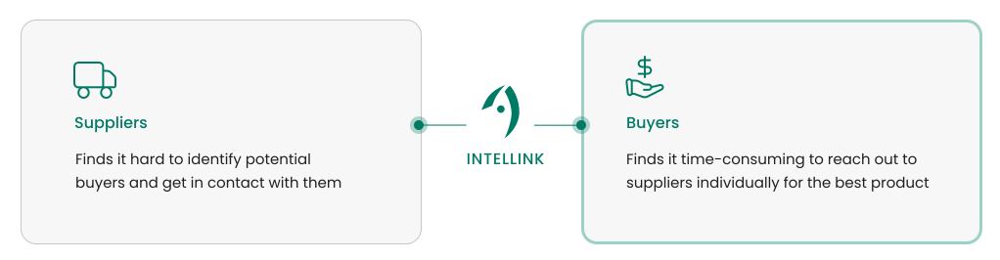
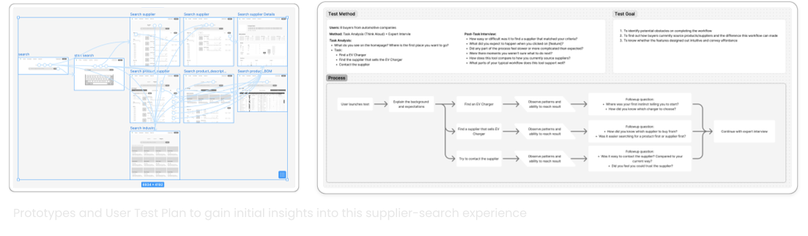
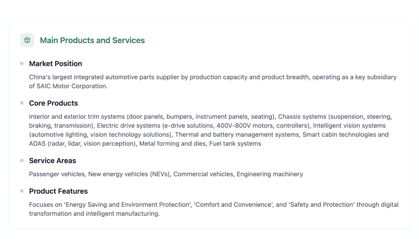
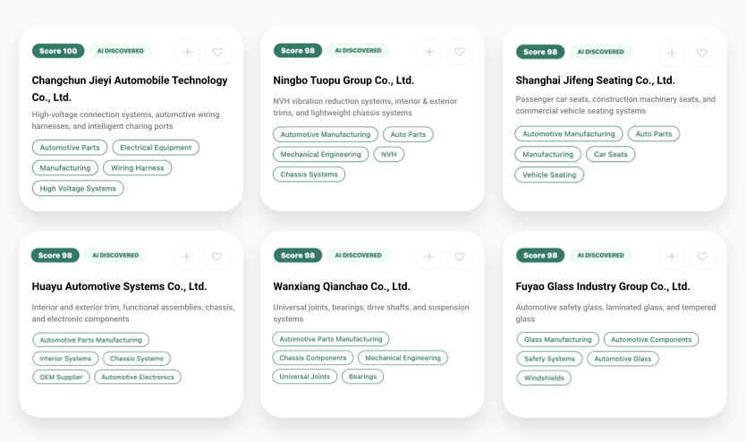
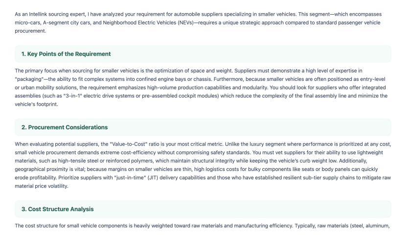
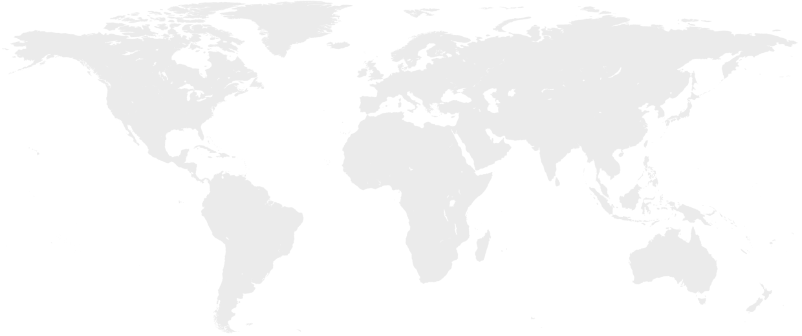
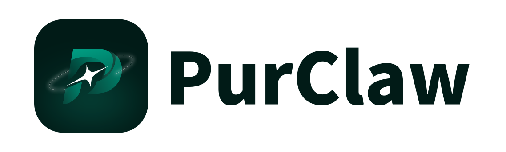

A buyer-first experience.
User research, founder expertise, and monetization potential helped us focus on buyers rather than building for both sides of the marketplace at once.



As a product and web lead, I helped Intellink evolve from an early-stage startup into a venture-backed AI company, aligning product decisions with fundraising, market validation, and revenue growth.
Validate the customer, narrow the MVP, and establish a focused product strategy.
User research, founder expertise, and monetization potential helped us focus on buyers rather than building for both sides of the marketplace at once.

I quickly prototyped the core journey for buyers searching the global supplier market, then brought that happy path to user tests for early feedback.

Focus on one customer segment.
Solve one painful problem exceptionally well.
I recognized that our next step was to evolve beyond supplier search. I helped shape the shift toward an AI product by connecting an unmet buyer need with a new opportunity for the company.
Research showed that buyers often struggled to articulate exactly what they needed. A search tool assumed they already had a clear brief; the opportunity was to help them form one.
As interest in AI accelerated, we saw supplier sourcing as an underexplored application. Its potential to interpret intent and ask clarifying questions made it a promising fit for the ambiguity buyers faced.
Positioning Intellink as an AI-native product that delivers meaningful business value at scale.



We test AI intent accuracy and the interactive experience separately. For the AI evaluation, 16 procurement experts scored responses from 1 to 10 across five dimensions, giving each response five scores.
We evaluate how well the agent understands and responds to sourcing requirements, starting with 50 cases across five industries. Each case has an expected result reviewed by our panel of 16 procurement experts. We asked the experts to score each response from 1 to 10 across the following five dimensions. Average scores help identify where the agent needs further training.
| Dimension | What we test | Average score |
|---|---|---|
| Requirement Understanding | Did the AI correctly understand what the buyer actually needs? | — / 10 |
| Response Quality | Is the answer clear, structured, useful, and appropriately detailed? | — / 10 |
| Recommendation Accuracy | Are the recommended suppliers genuinely capable of fulfilling the requirement? | — / 10 |
| Evidence & Reasoning | Can the AI explain each supplier recommendation using reliable information? | — / 10 |
| Decision Support | Does the response help the buyer decide what to do next? | — / 10 |
Expanding overseas called for websites tailored to international and Chinese buyers—and faster delivery. I adapted the messaging, information density, and visual hierarchy for each market, then used the support of AI to turn those designs into working pages and help the team deliver both websites.
A clearer product story for a new audience. Explore the design decisions behind the international homepage in its dedicated case study.
A localized experience shaped around Chinese buyers’ expectations, with messaging, trust signals, and information density adapted to the market.
Vibe coding accelerated implementation, but getting to a finished product took hands-on guidance. I used my HTML/CSS knowledge to direct the structure, refine layouts and interactions, and clean up generated code. Throughout each iteration, I kept the buyer’s experience and our product strategy in view.


Through our international business, we’re able to reach buyers across a variety of countries—from Germany and the United States to Brazil and Singapore. Our overseas presence and partnerships connect us with buyers across Europe, the Middle East, Southeast Asia, and the Americas, helping us understand sourcing needs across different markets.

By this point, we were working consistently with a few major clients. Those ongoing collaborations revealed a broader need: after finding the right suppliers, buyers still needed help managing supplier relationships, handling contracts, and analyzing documents. They needed a tool that could support more of the procurement cycle.
Across every stage: documents to analyze, relationships to maintain, and everyday procurement tasks to keep moving. Much of this work remained outside our earlier products.

The procurement AI assistant for the work beyond sourcing.
We framed Purclaw around a simple idea: distill a buyer’s knowledge, judgment, and everyday workflows into an AI assistant. Building on sourcing, it brings supplier management, contracts, document analysis, and recurring procurement tasks into one workspace—helping buyers carry the work forward throughout the procurement cycle.
Build reusable AI skills for supplier qualification, document analysis, and other everyday procurement tasks. Share them across the organization or publish them to the Skills Marketplace.
Describe a task in plain language and turn it into a reusable automation. Review RFQs, validate documents, and monitor supplier updates from a centralized automation hub.
Manage suppliers, conversations, contracts, and sourcing in one place, with AI supporting the full procurement lifecycle beyond supplier discovery.
Each funding round changed what the product needed: a focused MVP, an AI-native experience, localized launches, then a scalable platform. My role was to connect those business priorities with products people could understand and use.
 Click to Interact
Click to Interact